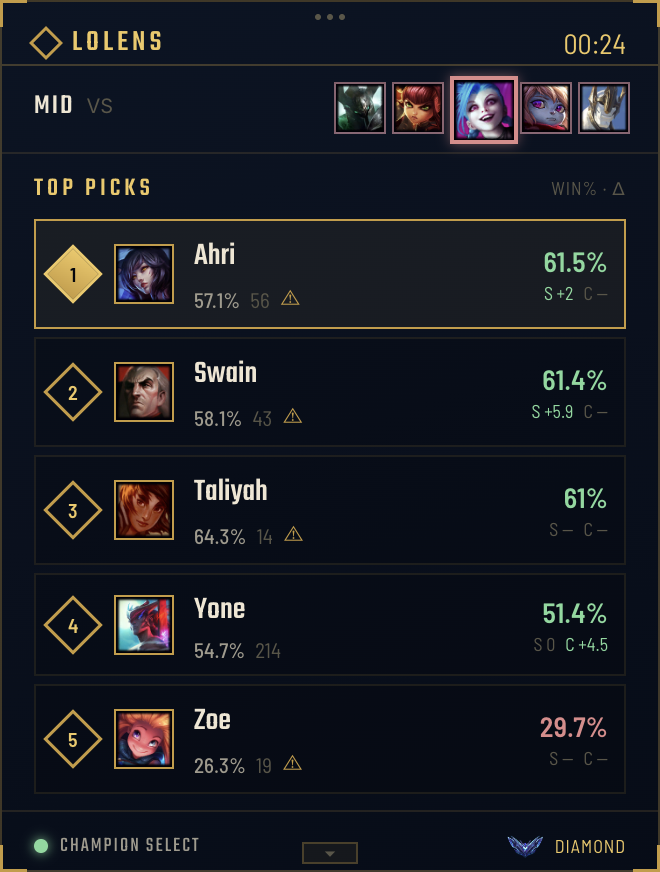
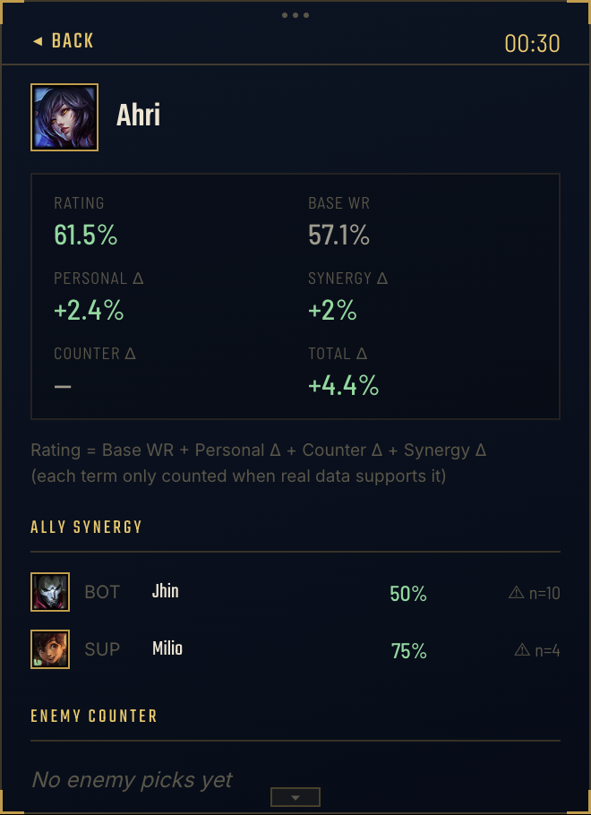

Most tools tell you what a tier list already knows. LoLens tells you two things a tier list can't: how you've actually done in this exact matchup, and how a real, rank-matched sample of players are doing in it right now — read live off your champion select, with nothing to type in.

Your pool, ranked live — every champion's win rate and deltas at a glance as the draft plays out.

Tap a champion to see how that rating was built — base win rate, your history, the counter, and the synergy, broken out.
LoLens notices the moment League opens and gives a quiet heads-up that it's watching. You don't open anything, log into anything, or tell it what game you're playing.
The overlay appears top-left on its own, reading picks, bans, and the clock straight from the League Client as they happen — never a draft you have to describe to it yourself.
Every champion in your pool is rated against the actual draft in front of you — factoring in your own history with the matchup, not just what the population tends to do.
A population baseline tells you what a Diamond+ lobby does on average. It has no idea what you do — and your own results are data too, not noise to be averaged away.
Every term is additive and inspectable — no hidden weighting, no black-box model. A term only counts when there's real data behind it; a champion you've never personally played simply skips that term rather than guessing on your behalf.
LoLens is not endorsed by Riot Games and does not reflect the views or opinions of Riot Games or anyone officially involved in producing or managing League of Legends. League of Legends and Riot Games are trademarks or registered trademarks of Riot Games, Inc.
The League Client API used here is unofficial and not supported by Riot for third-party use.